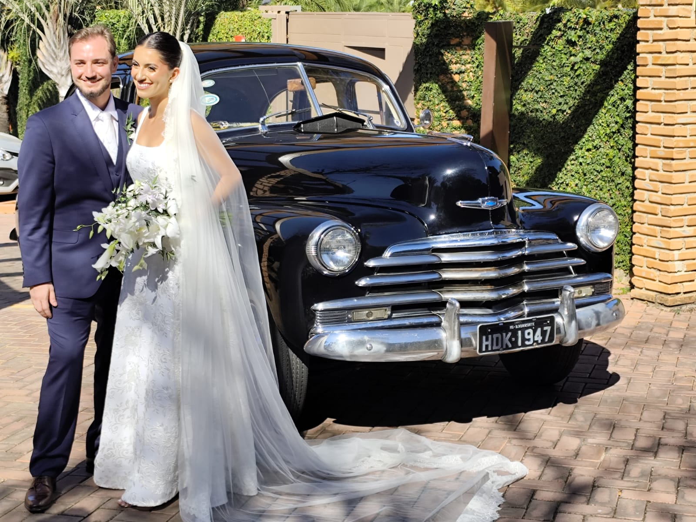
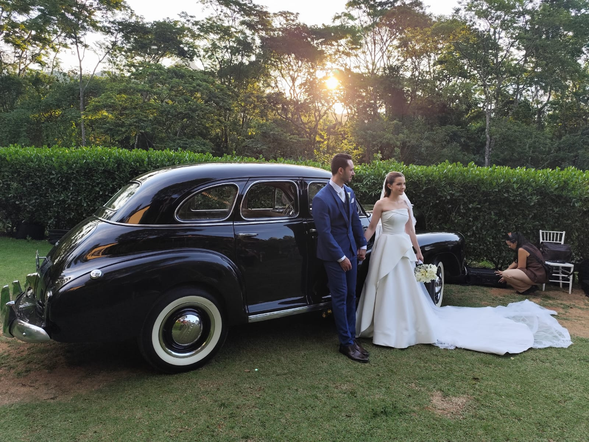
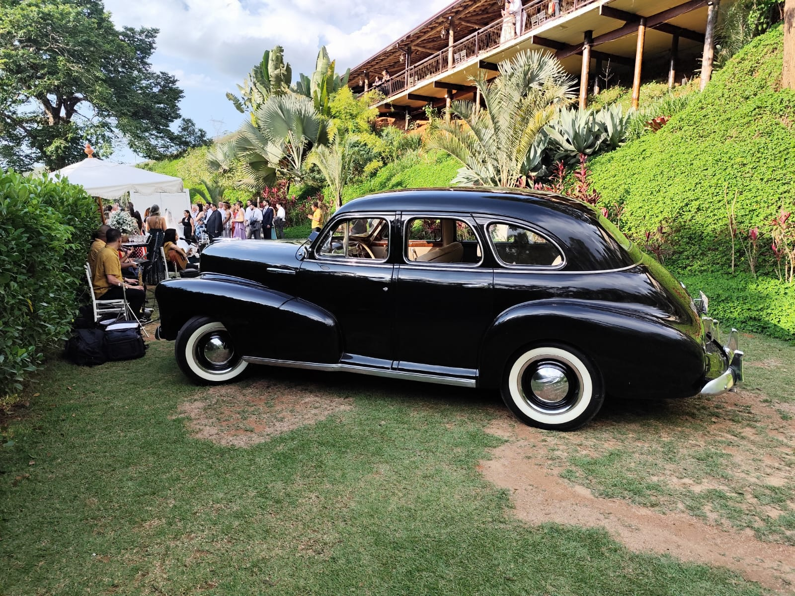
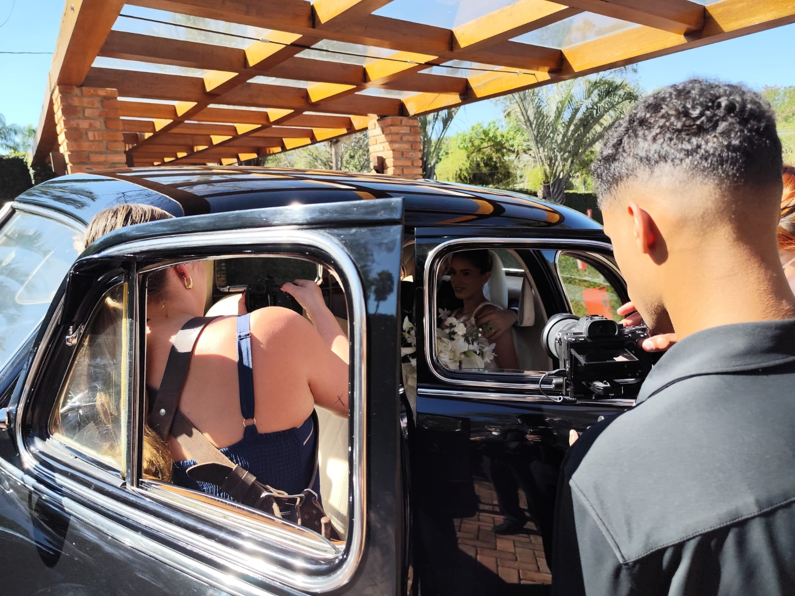

O SEU GRANDE DIA
Uma história a dois.
Um clássico como cenário para celebrar o começo de uma nova vida juntos.
Conversar sobre meu casamento✳ UM CLÁSSICO PARA O SEU CASAMENTO
Aluguel de carro antigo para casamento em Belo Horizonte, MG. O charme de um clássico para a chegada, as fotografias e as memórias do seu grande dia.

O COMEÇO DE UMA NOVA HISTÓRIA.01 / O CARRO DO SEU GRANDE DIA
Personalidade em cada detalhe.
Charme para celebrar o seu “sim”.

PRESENÇA QUE MARCA
Carroceria preta, detalhes cromados e pneus de faixa branca. Um visual atemporal que acompanha o vestido, o traje e o cenário que vocês escolheram.
Converse sobre os locais da cerimônia e da recepção, os horários e o tempo reservado para as fotos. Cada detalhe do uso do carro será combinado na proposta.
Consultar para meu casamentoCASAMENTOS COM O NOSSO CLÁSSICO
Noivos, cenários e histórias de amor.
Toque em uma foto para ver de perto.
02 / DO PRIMEIRO OLHAR À ÚLTIMA FOTO
Pense no roteiro do seu casamento.
Vamos combinar como o carro fará parte dele.

Um clássico como cenário para celebrar o começo de uma nova vida juntos.
Conversar sobre meu casamentoUma entrada com personalidade. Informe o endereço, o horário e o trajeto desejado para alinhar a chegada com a programação.
Planejar minha chegadaO brilho dos cromados, o vestido e os olhares. Combine um período para fotografias com o carro junto à equipe do casamento.
Conversar sobre as fotosDa cerimônia à recepção, conversem sobre os deslocamentos desejados. Os locais, a duração e o formato do serviço serão confirmados na proposta.
Combinar o roteiro
O CHARME ESTÁ NOS DETALHES.03 / O ESPÍRITO CLASSICOS&CO
O caminho até a cerimônia também faz parte da lembrança. A expectativa, os últimos detalhes do vestido e a chegada para encontrar quem você ama.
O nosso clássico traz o encanto de outra época para esse momento. Um cenário para as fotos e uma presença que acompanha a história de vocês.
04 / SIMPLES, DO PRIMEIRO CONTATO À CHEGADA
Envie a data, a cidade e os endereços da cerimônia e da recepção pelo WhatsApp.
Verifique a disponibilidade do único carro e alinhe os horários com o roteiro do casamento.
Confira valor, duração, trajeto, fotos e condições. A reserva depende da confirmação da proposta.
Com os detalhes combinados, aproveitem a chegada e guardem as memórias desse dia.
05 / ANTES DO GRANDE DIA
Os detalhes do aluguel são definidos
na proposta para o seu casamento.
Envie a data, a cidade, o local da cerimônia e os horários pelo WhatsApp. Como o serviço é focado em um único carro, a disponibilidade precisa ser confirmada. A primeira conversa não confirma uma reserva.
Sim. A Classicos&CO oferece aluguel de carro antigo para casamento em Belo Horizonte, MG. Envie os endereços da cerimônia e da recepção para consultar a disponibilidade e combinar o roteiro, os horários e o orçamento.
Confirme na conversa o formato do serviço e a presença de motorista. Essa informação, junto aos horários e trajetos, deve constar na proposta antes da reserva.
Informe que deseja um período para as fotos dos noivos. O tempo, o local e o acesso para a equipe de fotografia devem ser alinhados no roteiro e incluídos na proposta.
Envie a data, a cidade, os endereços, os horários e a duração desejada. O orçamento será definido conforme o roteiro e as condições do serviço. Confira o que está incluído antes de reservar.
Pergunte sobre chuva, tempo de espera, horas adicionais e possíveis alterações no roteiro. As condições de atendimento, remarcação e cancelamento precisam ser combinadas na proposta e no contrato.
06 / VAMOS PLANEJAR A SUA CHEGADA
Conte quando e onde será o casamento.
Vamos conversar sobre o carro para o seu “sim”.
SEM COMPROMISSO.
COM MUITO CHARME.
VAMOS CONVERSAR?
Para começar, envie a data, a cidade e o local da cerimônia. Se já souber os horários e o roteiro, pode mandar também.
Consultar meu casamento (31) 99645-4576A reserva depende da disponibilidade e da confirmação das condições do aluguel.